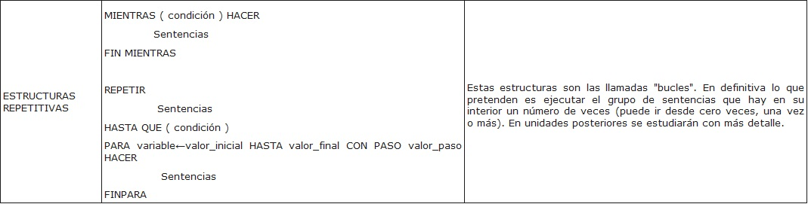
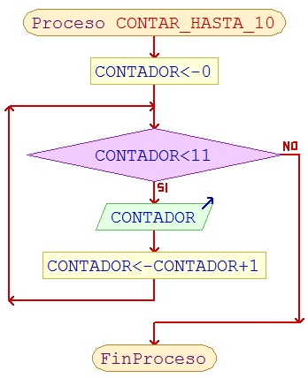

Repetitivas
Las estructuras de control repetitivas son aquellas que permiten ejecutar un conjunto de instrucciones varias veces, de acuerdo al valor que genere la expresión relacional y/o lógica.
Mientras
Repite el conjunto de instrucciones del bucle mientras se cumple una determinada condición. La condición se evalúa al principio, antes de entrar en el bucle.
Mientras <condición> hacer
<acciones>
Fin_mientras
Repetir
Hace lo mismo que la estructura mientras. La diferencia está en que la estructura Mientras comprueba la condición al inicio y Repetir lo hace al final. Es por ello que en este caso el bucle se ejecuta por lo menos una vez.
Repetir
<acciones>
Hasta <condición>
Fin_repetir
Para
Esta estructura condicional incluye un contador, lo que quiere decir que se conoce el número de veces que se repetirá el cuerpo del bucle.
Para variable valor_inicial hasta valor final
Incremento variable
<acciones>
Fin_para
En resumen, en pseudocódigo sería:


Imagen en Wikimedia Commons. Licencia CC
Obra publicada con Licencia Creative Commons Reconocimiento 4.0